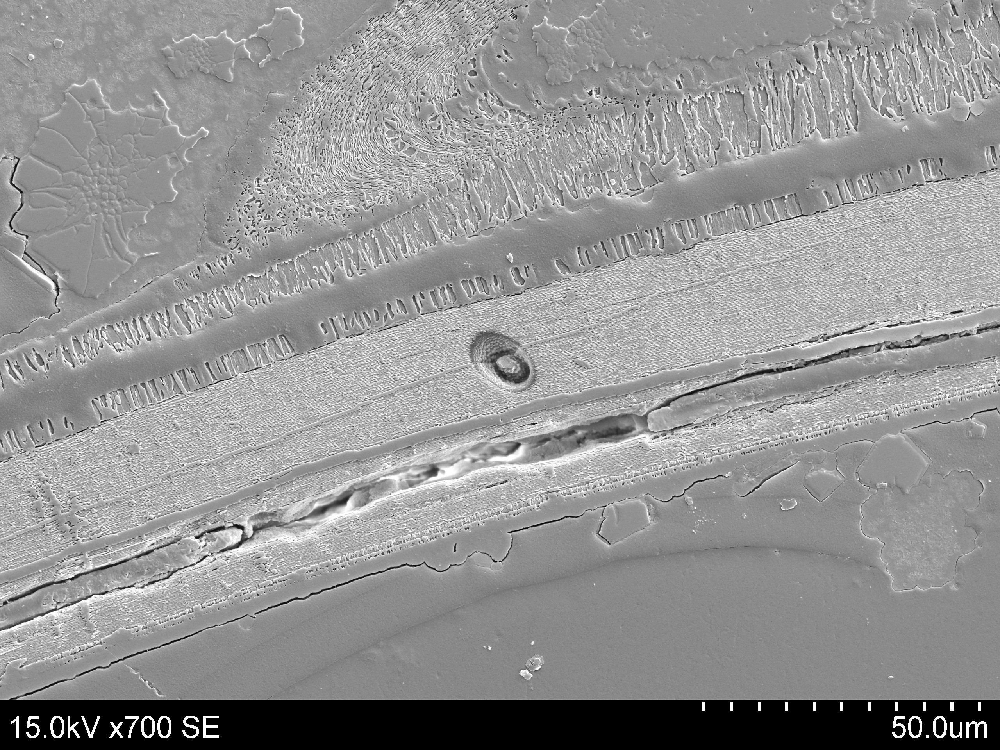

Fossils in Morocco.

an ion micropobe pit.
a modern Nautilus.

Morocco.

I study the history of Earth's surface environment and the organisms that lived on it by using geochemical proxies preserved in fossil shells. Because shells grow quickly and can be assessed for diagenesis, primary environmental signals such at temperature, water pH, and productivity can be infered on timescales of days to decades through most of the Phanerozoic. Additionally, careful assessment for alteration can ensure the primary environmental signals recorded at the time of growth are measured.
Currently as a postdoc, I am working in collaboration with Andy Jacobson , Brad Sageman , and Matt Hurtgen at Northwestern University. We are working to understand the environmental drivers of the Creataceous - Paleogene mass extinction by measuring calcium isotope variation in well preserved bivalve mollusks across the event.
My PhD work used the Cameca 1280-IMS at the WiscSIMS Laboratory at the University of Wisconsin - Madison. This machine allows for high spatial resolution measurement of a variety of stable isotopes. With this method I focused on measuring daily to monthly records of envrionment and ecology in cephalopod mollusks.